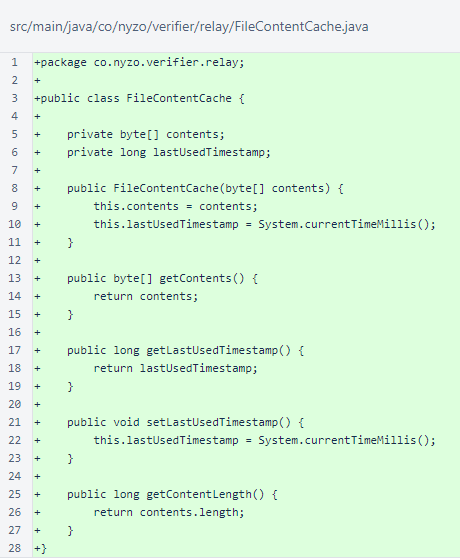
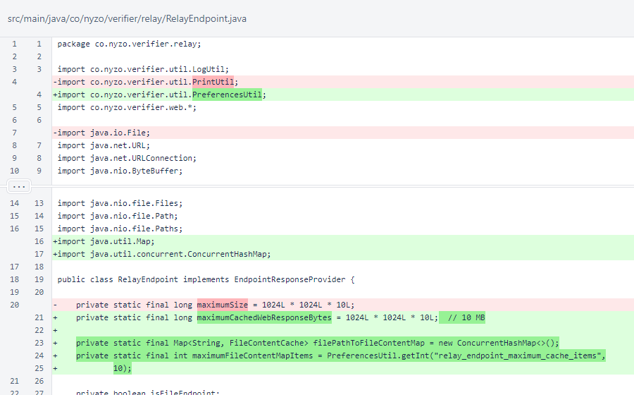
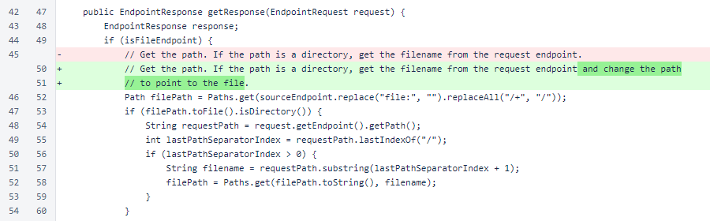
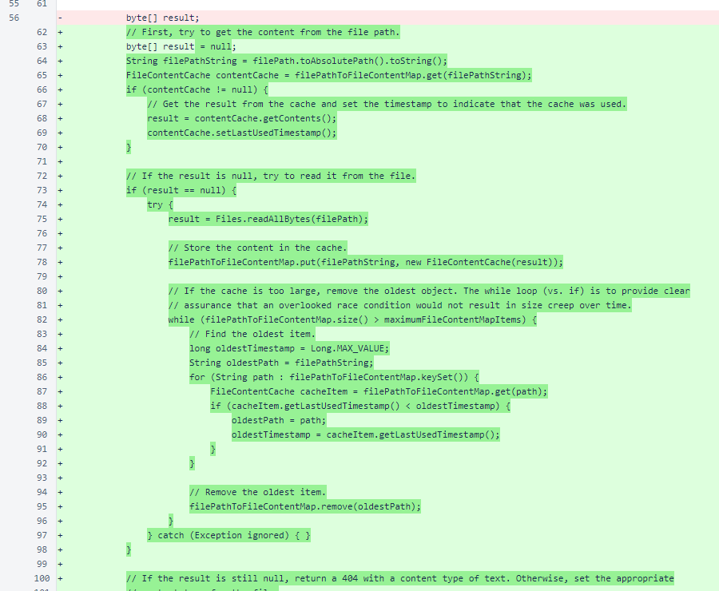
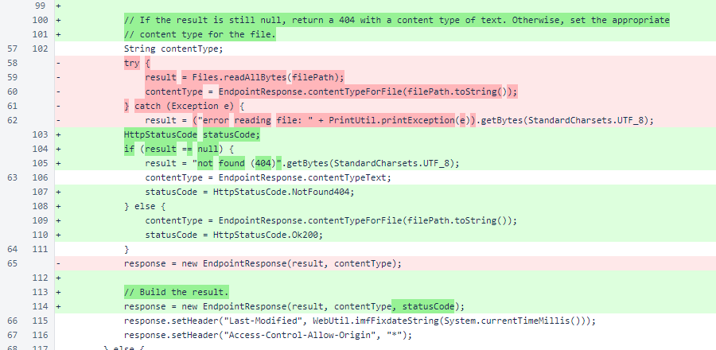
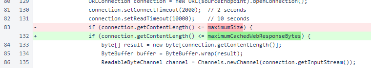

Nyzo 624: relay file cache
Nyzo version 624
(commit on GitHub) adds caching for relay file endpoints.
This version affects the relay server.
The new FileContentCache class in the relay package
provides structure to cached file data. The lastUsedTimestamp is used for
removal when the cache exceeds the specified maximum number of items.

In RelayEndpoint, the maximumSize constant was
renamed to maximumCachedWebResponseBytes. This is nothing more than
a renaming to improve clarity of code.
The filePathToFileContentMap and
maximumFileContentMapItems support the new caching functionality.
The maximumFileContentMapItems value is adjustable through the
preferences file, with a default value of 10
items.

The comment regarding adjustment of the filePath for a child of a directory
endpoint has been improved.

Cache storage and retrieval now occurs where files were always read from disk previously. In the event of a cache
miss, the file is read from disk and stored in the cache. For a cache hit, the last-used timestamp is updated. If
the cache grows too large, the oldest items are removed.

A proper 404 is now returned when a non-existent file is requested.

The renaming of maximumSize to
maximumCachedWebResponseBytes was applied where the constant is
used.
